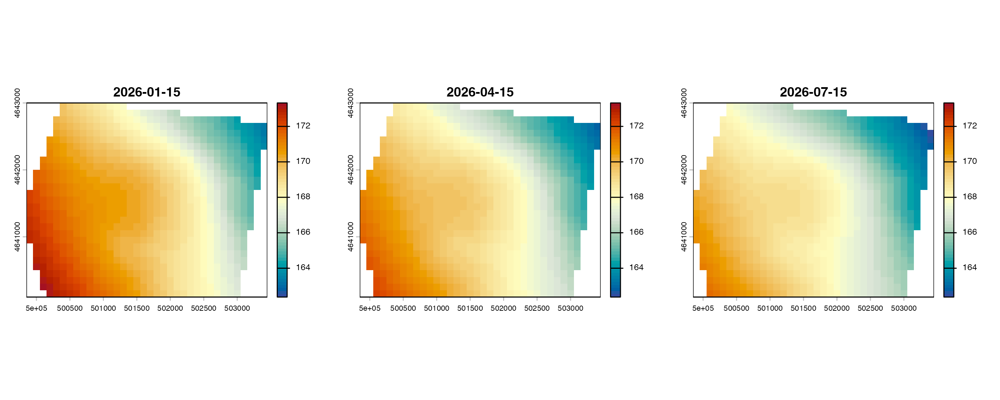
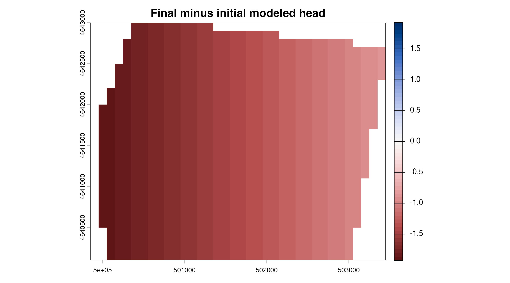

Repeated monitoring events
repeated-events.Rmdpotentiomap operates on one observation set at a time.
Base R splitting and iteration can apply that released functionality to
repeated events. This article does not claim grouped processing as a
built-in package feature.
Create a reproducible long table
set.seed(20260529)
events <- as.Date(c("2026-01-15", "2026-04-15", "2026-07-15"))
long <- do.call(rbind, lapply(seq_along(events), function(i) {
d <- synthetic_wells[c("well_id", "x", "y", "gw_elevation")]
d$monitoring_date <- events[i]
d$event_head <- d$gw_elevation - c(0, 0.7, 1.3)[i] +
c(0, 0.00020, 0.00030)[i] * (d$x - mean(d$x))
d
}))
long <- long[order(long$monitoring_date, long$well_id), ]
head(long[, c("monitoring_date", "well_id", "x", "y", "event_head")])
#> monitoring_date well_id x y event_head
#> 1 2026-01-15 MW-01 502848.7 4641228 166.65
#> 2 2026-01-15 MW-02 502914.4 4642016 165.50
#> 3 2026-01-15 MW-03 500994.1 4640210 171.45
#> 4 2026-01-15 MW-04 502599.8 4642407 165.70
#> 5 2026-01-15 MW-05 502043.2 4640219 169.00
#> 6 2026-01-15 MW-06 501681.3 4640750 169.53The changes are synthetic and intended only to demonstrate workflow structure.
Apply a common AOI and grid
aoi <- ps_sample_aoi()
template <- rast(crs = "EPSG:26916", ext = ext(aoi), resolution = 100)
by_event <- split(long, long$monitoring_date)
event_surfaces <- lapply(by_event, function(d) {
points <- ps_make_points(
d, "x", "y", "event_head", "well_id", "EPSG:26916"
)
ps_interpolate(points, methods = "TPS", template = template, mask = aoi)$TPS
})
#> Warning: TPS GCV selected lambda 1.81248e-05 at a search boundary; inspect
#> sensitivity and prediction support.
#> Warning: TPS GCV selected lambda 1.81248e-05 at a search boundary; inspect
#> sensitivity and prediction support.
#> Warning: TPS GCV selected lambda 1.81248e-05 at a search boundary; inspect
#> sensitivity and prediction support.
do.call(rbind, lapply(names(event_surfaces), function(date) {
r <- event_surfaces[[date]]
data.frame(date = date, rows = nrow(r), columns = ncol(r),
x_resolution_m = res(r)[1], finite_cells = global(r, "notNA")[[1]])
}))
#> date rows columns x_resolution_m finite_cells
#> 1 2026-01-15 29 36 100 904
#> 2 2026-04-15 29 36 100 904
#> 3 2026-07-15 29 36 100 904
shared <- range(unlist(lapply(event_surfaces, minmax)), finite = TRUE)
par(mfrow = c(1, 3), mar = c(3, 3, 3, 1))
for (date in names(event_surfaces)) {
plot(event_surfaces[[date]], col = cols, range = shared, main = date)
}
Export event-specific products
event_root <- file.path(tempdir(), "potentiomap-repeated-events")
export_counts <- lapply(names(event_surfaces), function(date) {
out <- ps_export_surfaces(
setNames(list(event_surfaces[[date]]), "TPS"),
out_dir = file.path(event_root, date),
out_stub = paste0("event_", gsub("-", "", date)),
contour_interval = 1,
write_png = FALSE
)
data.frame(date = date, rasters = sum(file.exists(out$raster)),
contour_datasets = sum(file.exists(out$contours)))
})
do.call(rbind, export_counts)
#> date rasters contour_datasets
#> 1 2026-01-15 1 1
#> 2 2026-04-15 1 1
#> 3 2026-07-15 1 1Modeled-head difference
modeled_difference <- event_surfaces[[3]] - event_surfaces[[1]]
limit <- max(abs(minmax(modeled_difference)))
plot(modeled_difference, col = hcl.colors(64, "Blue-Red 3", rev = TRUE),
range = c(-limit, limit), main = "Final minus initial modeled head")
data.frame(
comparison = paste(names(event_surfaces)[3], "minus", names(event_surfaces)[1]),
minimum = minmax(modeled_difference)[1],
mean = global(modeled_difference, "mean", na.rm = TRUE)[[1]],
maximum = minmax(modeled_difference)[2]
)
#> comparison minimum mean maximum
#> 1 2026-07-15 minus 2026-01-15 -1.927169 -1.415809 -0.8771692An interpolated difference is a difference between two modeled surfaces. It is not measured change at unsampled locations. Interpret it with measurement timing, pumping conditions, network consistency, aquifer selection, uncertainty, and any changed boundary conditions.